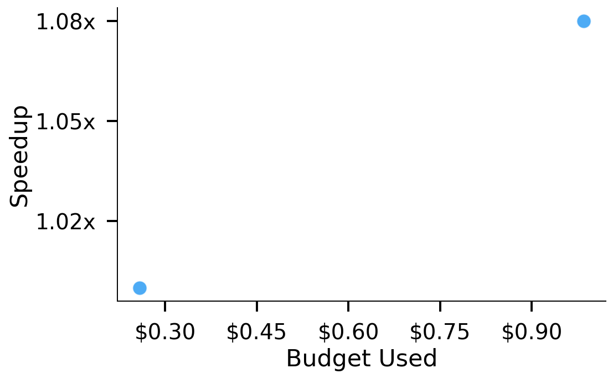
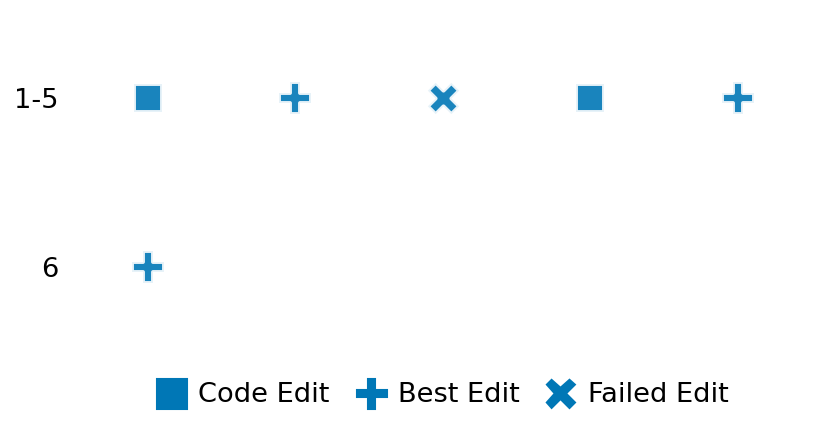

SETTING:
You're an autonomous programmer tasked with solving a specific problem. You are to use the commands defined below to accomplish this task. Every message you send incurs a cost—you will be informed of your usage and remaining budget by the system.
You will be evaluated based on the best-performing piece of code you produce, even if the final code doesn't work or compile (as long as it worked at some point and achieved a score, you will be eligible).
Apart from the default Python packages, you have access to the following additional packages:
- cryptography
- cvxpy
- cython
- dace
- dask
- diffrax
- ecos
- faiss-cpu
- hdbscan
- highspy
- jax
- networkx
- numba
- numpy
- ortools
- pandas
- pot
- psutil
- pulp
- pyomo
- python-sat
- pythran
- scikit-learn
- scipy
- sympy
- torch
YOUR TASK:
Your objective is to define a class named `Solver` in `solver.py` with a method:
```
class Solver:
def solve(self, problem, **kwargs) -> Any:
"""Your implementation goes here."""
...
```
IMPORTANT: Compilation time of your init function will not count towards your function's runtime.
This `solve` function will be the entrypoint called by the evaluation harness. Strive to align your class and method implementation as closely as possible with the desired performance criteria.
For each instance, your function can run for at most 10x the reference runtime for that instance. Strive to have your implementation run as fast as possible, while returning the same output as the reference function (for the same given input). Be creative and optimize your approach!
Your messages should include a short thought about what you should do, followed by a _SINGLE_ command. The command must be enclosed within ``` and ```, like so:
<Reasoning behind executing the command>
```
<command>
```
IMPORTANT: Each set of triple backticks (```) must always be on their own line, without any other words or anything else on that line.
Here are the commands available to you. Ensure you include one and only one of the following commands in each of your responses:
- `edit`: Replace a range of lines with new content in a file. This is how you can create files: if the file does not exist, it will be created. Here is an example:
```
edit
file: <file_name>
lines: <start_line>-<end_line>
---
<new_content>
---
```
The command will:
1. Delete the lines from <start_line> to <end_line> (inclusive)
2. Insert <new_content> starting at <start_line>
3. If both <start_line> and <end_line> are 0, <new_content> will be prepended to the file
Example:
edit
file: solver.py
lines: 5-7
---
def improved_function():
print("Optimized solution")
---
- `ls`: List all files in the current working directory.
- `view_file <file_name> [start_line]`: Display 100 lines of `<file_name>` starting from `start_line` (defaults to line 1).
- `revert`: Revert the code to the best-performing version thus far.
- `reference <string>`: Query the reference solver with a problem and receive its solution. If the problem's input is a list, this command would look like:
```
reference [1,2,3,4]
```
- `eval_input <string>`: Run your current solver implementation on the given input. This is the only command that shows stdout from your solver along with both solutions. Example:
```
eval_input [1,2,3,4]
```
- `eval`: Run evaluation on the current solution and report the results.
- `delete`: Delete a range of lines from a file using the format:
```
delete
file: <file_name>
lines: <start_line>-<end_line>
The command will delete the lines from <start_line> to <end_line> (inclusive)
Example:
delete
file: solver.py
lines: 5-10
```
- `profile <filename.py> <input>`: Profile your currently loaded solve method's performance on a given input. Shows the 25 most time-consuming lines. Requires specifying a python file (e.g., `solver.py`) for validation, though profiling runs on the current in-memory code.
Example:
```
profile solver.py [1, 2, 3]
```
- `profile_lines <filename.py> <line_number1, line_number2, ...> <input>`: Profiles the chosen lines of the currently loaded code on the given input. Requires specifying a python file for validation.
Example:
```
profile_lines solver.py 1,2,3 [1, 2, 3]
```
**TIPS:**
After each edit, a linter will automatically run to ensure code quality. If there are critical linter errors, your changes will not be applied, and you will receive the linter's error message. Typically, linter errors arise from issues like improper indentation—ensure your edits maintain proper code formatting.
**Cython Compilation:** Edits creating or modifying Cython (`.pyx`) files will automatically trigger a compilation attempt (requires a `setup.py`). You will be notified if compilation succeeds or fails. If it fails, the edit to the `.pyx` file will be automatically reverted.
If the code runs successfully without errors, the in-memory 'last known good code' will be updated to the new version. Following successful edits, you will receive a summary of your `solve` function's performance compared to the reference.
If you get stuck, try reverting your code and restarting your train of thought.
Do not put an if __name__ == "__main__": block in your code, as it will not be ran (only the solve function will).
Keep trying to better your code until you run out of money. Do not stop beforehand!
**GOALS:**
Your primary objective is to optimize the `solve` function to run as as fast as possible, while returning the optimal solution.
You will receive better scores the quicker your solution runs, and you will be penalized for exceeding the time limit or returning non-optimal solutions.
Below you find the description of the task you will have to solve. Read it carefully and understand what the problem is and what your solver should do.
**TASK DESCRIPTION:**
Maximum Independent Set
Given an undirected graph G, find the largest set of nodes such that no two nodes in the set appears on the same edge.
Input: A 2d array (2 dim list) A with value 0/1 representing the adjacency matrix
A[i][j] = 0 : there is no edge between i, j
A[i][j] = 1 : there is an edge between i, j
The input should be symmetric
Example input: [
[0,1,0,1],
[1,0,1,0],
[0,1,0,1],
[1,0,1,0]
]
Output: A list showing the index of the selected nodes
Example output: [0, 2]
Category: discrete_optimization
Below is the reference implementation. Your function should run much quicker.
import random
from pysat.card import CardEnc, EncType
from pysat.formula import CNF
from pysat.solvers import Solver
| 01: def solve(self, problem: list[list[int]]) -> list[int]:
| 02: """
| 03: Solves the max independent set problem using pysat.solve.
| 04:
| 05: :param problem: a 2d-array (adj matrix)
| 06: :return: A list indicating the selected nodes
| 07:
| 08:
| 09: NOTE: Your solution must pass validation by:
| 10: 1. Returning correctly formatted output
| 11: 2. Having no NaN or infinity values
| 12: 3. Matching expected results within numerical tolerance
| 13: """
| 14:
| 15: # helper function that transforms the MIS problem with adjacency matrix to a SAT problem
| 16: def mis_to_sat(adj_matrix, k):
| 17: # adj_matrix : adj matrix
| 18: # k : minimum card needs to satisfy
| 19: n = len(adj_matrix)
| 20: cnf = CNF()
| 21:
| 22: # Vars: x_1 ... x_n (1-based for PySAT)
| 23: # Independence constraints: For all (i, j) with edge, add ¬x_i ∨ ¬x_j
| 24: for i in range(n):
| 25: for j in range(i + 1, n):
| 26: if adj_matrix[i][j] == 1:
| 27: cnf.append([-(i + 1), -(j + 1)]) # ¬x_i ∨ ¬x_j
| 28:
| 29: # Cardinality constraint: x_1 + x_2 + ... + x_n ≥ k
| 30: atleast_k = CardEnc.atleast(
| 31: lits=[i + 1 for i in range(n)], bound=k, encoding=EncType.seqcounter
| 32: )
| 33: cnf.extend(atleast_k.clauses)
| 34:
| 35: return cnf
| 36:
| 37: try:
| 38: # now binary search for the solution
| 39: n = len(problem)
| 40: # first check if all nodes can be included
| 41: cnf = mis_to_sat(problem, n)
| 42: with Solver(name="Minicard") as solver:
| 43: solver.append_formula(cnf)
| 44: sat = solver.solve()
| 45: model = solver.get_model() if sat else None
| 46: if model:
| 47: # Extract selected nodes
| 48: selected = [i for i in range(len(problem)) if model[i] > 0]
| 49: return selected
| 50:
| 51: # now the independent set cannot be n nodes
| 52: # binary search in range [left, right)
| 53: left = 1
| 54: selected = [0]
| 55: right = n
| 56:
| 57: while right > left:
| 58: if right == left + 1:
| 59: return selected
| 60: mid = (right + left) // 2
| 61: # search for mid
| 62: cnf = mis_to_sat(problem, mid)
| 63: with Solver(name="Minicard") as solver:
| 64: solver.append_formula(cnf)
| 65: sat = solver.solve()
| 66: model = solver.get_model() if sat else None
| 67: if model:
| 68: # Extract selected nodes
| 69: selected = [i for i in range(len(problem)) if model[i] > 0]
| 70: left = len(selected)
| 71: else:
| 72: right = mid
| 73: except Exception as e:
| 74: return [0] # return trivial answer
| 75:
This function will be used to check if your solution is valid for a given problem. If it returns False, it means the solution is invalid:
import random
from pysat.card import CardEnc, EncType
from pysat.formula import CNF
from pysat.solvers import Solver
| 01: def is_solution( problem: list[list[int]], solution: list[int]) -> bool:
| 02: try:
| 03: # first verify the solution is indeed and independent set
| 04: for i in range(len(solution)):
| 05: for j in range(i + 1, len(solution)):
| 06: if problem[solution[i]][solution[j]] == 1:
| 07: return False
| 08:
| 09: # then see if the solution is optimal
| 10: optimal = solve(problem)
| 11: return len(optimal) == len(solution)
| 12: except Exception as e:
| 13: logging.error(f"Error when verifying solution: {e}")
| 14: return False
| 15:
 AlgoTuner Trajectory
AlgoTuner Trajectory
AlgoTune Task:
max_independent_set
Model:
Claude Opus 4
Speedup
1.209x
Total Budget
$1.00
Initial System Prompt
AlgoTune Task Description
Maximum Independent Set
Given an undirected graph G, find the largest set of nodes such that no two nodes in the set appears on the same edge.
Input: A 2d array (2 dim list) A with value 0/1 representing the adjacency matrix
A[i][j] = 0 : there is no edge between i, j
A[i][j] = 1 : there is an edge between i, j
The input should be symmetric
Example input: [
[0,1,0,1],
[1,0,1,0],
[0,1,0,1],
[1,0,1,0]
]
Output: A list showing the index of the selected nodes
Example output: [0, 2]
Category: discrete_optimization
Reference Implementation
import random
from pysat.card import CardEnc, EncType
from pysat.formula import CNF
from pysat.solvers import Solver
def solve(self, problem: list[list[int]]) -> list[int]:
"""
Solves the max independent set problem using pysat.solve.
:param problem: a 2d-array (adj matrix)
:return: A list indicating the selected nodes
NOTE: Your solution must pass validation by:
1. Returning correctly formatted output
2. Having no NaN or infinity values
3. Matching expected results within numerical tolerance
"""
# helper function that transforms the MIS problem with adjacency matrix to a SAT problem
def mis_to_sat(adj_matrix, k):
# adj_matrix : adj matrix
# k : minimum card needs to satisfy
n = len(adj_matrix)
cnf = CNF()
# Vars: x_1 ... x_n (1-based for PySAT)
# Independence constraints: For all (i, j) with edge, add ¬x_i ∨ ¬x_j
for i in range(n):
for j in range(i + 1, n):
if adj_matrix[i][j] == 1:
cnf.append([-(i + 1), -(j + 1)]) # ¬x_i ∨ ¬x_j
# Cardinality constraint: x_1 + x_2 + ... + x_n ≥ k
atleast_k = CardEnc.atleast(
lits=[i + 1 for i in range(n)], bound=k, encoding=EncType.seqcounter
)
cnf.extend(atleast_k.clauses)
return cnf
try:
# now binary search for the solution
n = len(problem)
# first check if all nodes can be included
cnf = mis_to_sat(problem, n)
with Solver(name="Minicard") as solver:
solver.append_formula(cnf)
sat = solver.solve()
model = solver.get_model() if sat else None
if model:
# Extract selected nodes
selected = [i for i in range(len(problem)) if model[i] > 0]
return selected
# now the independent set cannot be n nodes
# binary search in range [left, right)
left = 1
selected = [0]
right = n
while right > left:
if right == left + 1:
return selected
mid = (right + left) // 2
# search for mid
cnf = mis_to_sat(problem, mid)
with Solver(name="Minicard") as solver:
solver.append_formula(cnf)
sat = solver.solve()
model = solver.get_model() if sat else None
if model:
# Extract selected nodes
selected = [i for i in range(len(problem)) if model[i] > 0]
left = len(selected)
else:
right = mid
except Exception as e:
return [0] # return trivial answerBest AlgoTuner-Generated Code
solver.py
from pysat.card import CardEnc, EncType
from pysat.formula import CNF
from pysat.solvers import Solver as SATSolver
import numpy as np
class Solver:
def __init__(self):
# Precompile branch and bound for small graphs
self._compile_bb()
def _compile_bb(self):
"""Compile the branch and bound algorithm"""
# This will be called once during initialization
pass
def _greedy_heuristic(self, adj_matrix, n):
"""Fast greedy heuristic to find initial solution"""
degrees = np.sum(adj_matrix, axis=1)
remaining = set(range(n))
solution = []
while remaining:
# Find minimum degree node
min_deg = float('inf')
min_node = -1
for node in remaining:
deg = sum(adj_matrix[node][neighbor] for neighbor in remaining if neighbor != node)
if deg < min_deg:
min_deg = deg
min_node = node
# Add to solution
solution.append(min_node)
remaining.remove(min_node)
# Remove neighbors
to_remove = []
for neighbor in remaining:
if adj_matrix[min_node][neighbor] == 1:
to_remove.append(neighbor)
for neighbor in to_remove:
remaining.remove(neighbor)
return solution
def solve(self, problem):
"""
Solves the max independent set problem using optimized SAT solver.
:param problem: a 2d-array (adj matrix)
:return: A list indicating the selected nodes
"""
n = len(problem)
# Trivial cases
if n == 0:
return []
if n == 1:
return [0]
# Convert to numpy for faster operations
adj_matrix = np.array(problem, dtype=np.int8)
# Check if graph has no edges
if np.sum(adj_matrix) == 0:
return list(range(n))
# For very small graphs, try all possibilities
if n <= 15:
best_size = 0
best_set = []
# Try all 2^n subsets
for mask in range(1 << n):
subset = [i for i in range(n) if mask & (1 << i)]
# Check if it's independent
is_independent = True
for i in range(len(subset)):
for j in range(i + 1, len(subset)):
if adj_matrix[subset[i]][subset[j]] == 1:
is_independent = False
break
if not is_independent:
break
if is_independent and len(subset) > best_size:
best_size = len(subset)
best_set = subset
return best_set
# Create solver once and reuse it
solver = SATSolver(name="Glucose3")
# Add independence constraints
for i in range(n):
for j in range(i + 1, n):
if adj_matrix[i][j] == 1:
solver.add_clause([-(i + 1), -(j + 1)])
# Binary search with incremental solving
left, right = 1, n
best_solution = [0]
# Try to find a good initial solution quickly
# Start from the middle
mid = (n + 1) // 2
while left <= right:
# Create assumption literals for at least mid nodes
assumptions = []
# Use totalizer encoding for better performance
card_enc = CardEnc.atleast(
lits=list(range(1, n + 1)),
bound=mid,
encoding=EncType.totalizer
)
# Add cardinality clauses temporarily via assumptions
solver_copy = SATSolver(name="Glucose3")
# Copy independence constraints
for i in range(n):
for j in range(i + 1, n):
if adj_matrix[i][j] == 1:
solver_copy.add_clause([-(i + 1), -(j + 1)])
# Add cardinality constraints
for clause in card_enc.clauses:
solver_copy.add_clause(clause)
# Solve
if solver_copy.solve():
model = solver_copy.get_model()
if model:
solution = [i for i in range(n) if model[i] > 0]
if len(solution) >= mid:
best_solution = solution
left = mid + 1
else:
right = mid - 1
else:
right = mid - 1
solver_copy.delete()
# Update mid
if left <= right:
mid = (left + right) // 2
solver.delete()
return best_solutionSpeedup vs Budget Plot
Speedup vs Budget

Action Sequence
